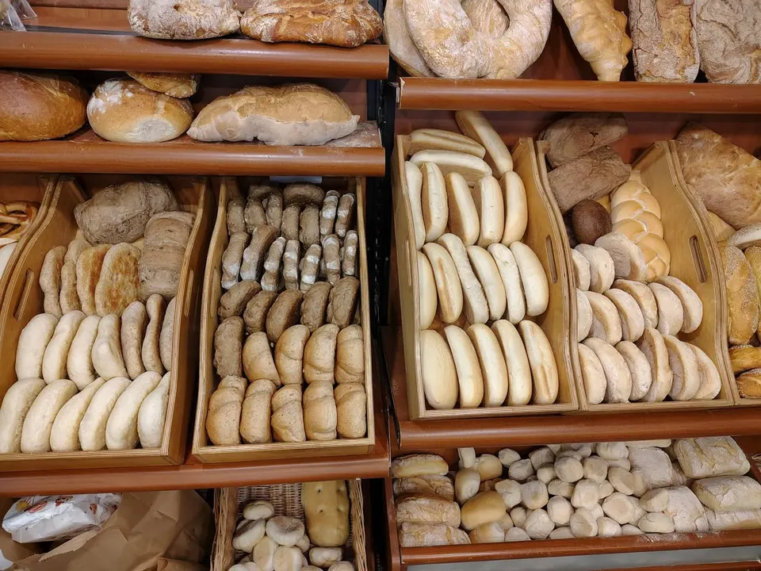
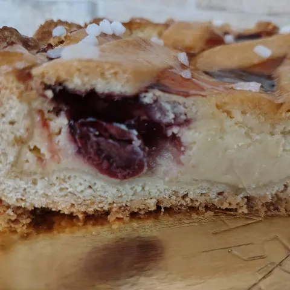
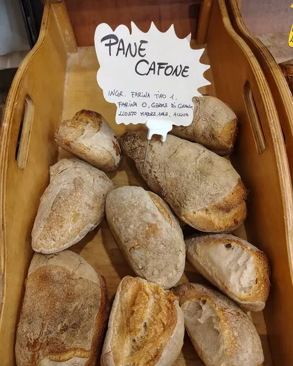
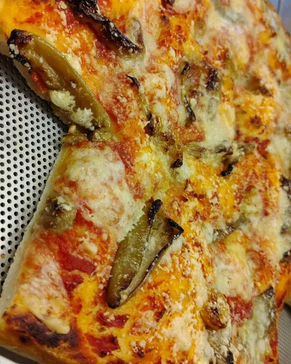
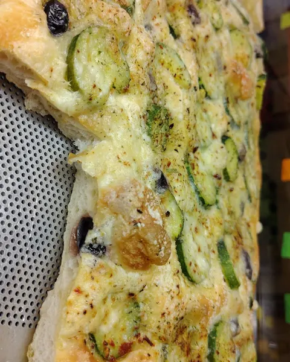
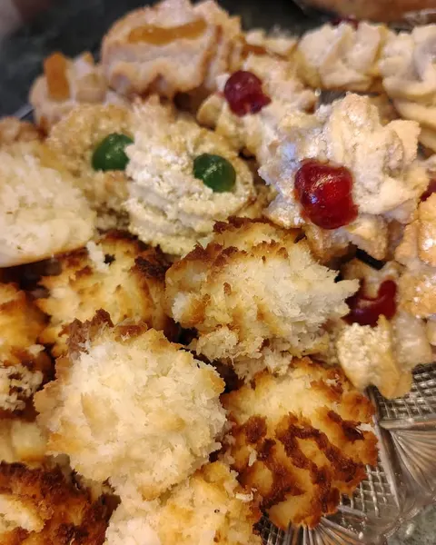
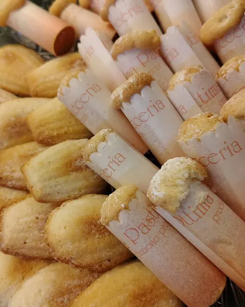
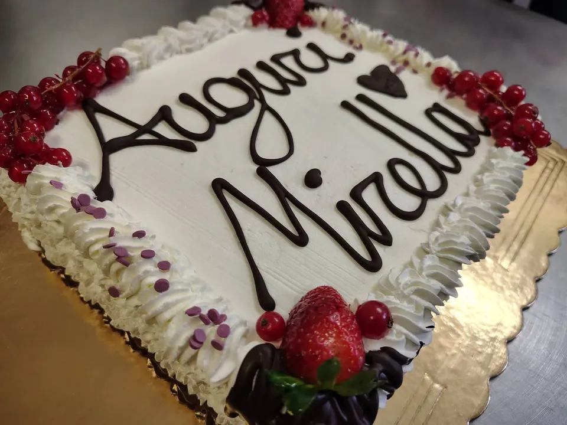
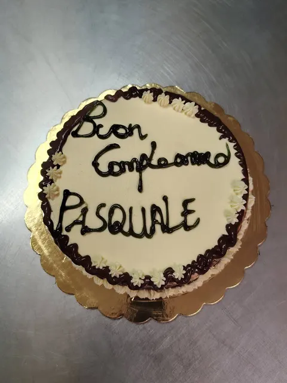

Panetteria e pasticceria · Almese
Un forno che parla piemontese e napoletano.
Pane con lievito madre, pizza e focaccia in teglia, grissini, dolci e torte su ordinazione. Ti aspettiamo in via San Sebastiano 1, dalle 7:15 del mattino.
- 4,7 su Google · 42 recensioni
- Prenota su WhatsApp e ritira in negozio


Ogni giorno al banco
Appena sfornato, da portare a casa.
Pane, pizza e dolci da ritirare in bottega o da farti portare a casa. Per ordinare basta un messaggio.
-

Pane cafone e pugliese
Con lievito madre e germe di grano. Crosta croccante, buono per giorni.
-

Pizza in teglia
Soffice e ben condita, per il pranzo o per la cena da asporto.
-

Focaccia
Semplice o farcita, come questa con zucchine e olive.
-

Biscotti e pasticcini
Al cocco, con la ciliegia candita e tanti altri, per la colazione o il caffè.
-

Madeleine e dolcetti
Piccole dolcezze da gustare subito o da portare in regalo.
-
E poi…
Grissini, anche al mais.
- Alberelli
- Anelli misti
- Brioche alla Nutella
- Crostata amalfitana
- e tanto altro al banco
Vuoi prenotare e passare a ritirare?
Ordina su WhatsAppDue tradizioni, un solo bancone.
Dal Piemonte
grissini
Croccanti e anche al mais: per i nostri clienti sono «superlativi».
Da Napoli e dal Sud
pane cafone
Con lievito madre e germe di grano, accanto al pane pugliese e alla crostata amalfitana.


Torte su ordinazione
La torta della festa, scritta a mano.
Compleanni, anniversari, battesimi e ricorrenze: decoriamo la torta con il nome e gli auguri che vuoi. Raccontaci la tua idea, al resto pensiamo noi.
Hai in mente un dolce particolare? Chiedi pure: le sfide ci piacciono.
«Una scommessa aperta: la panna cotta al limone. Scommessa vinta con 10 e lode.»
Gianni, recensione su Google
Cliente su Google«Ottimo pane, ottima pizza, ingredienti super, personale gentilissimo.»
Massimiliano, su Google«Consiglio il pane pugliese. Molto croccante e dura più giorni.»
Cliente su Google«Tantissimo assortimento di prodotti da forno, gentilezza squisita.»
Massimo, su Google«Unico nelle scelte delle materie prime… grazie.»
Vieni a trovarci
Via San Sebastiano 1, Almese.
- Prenotazioni al telefono o su WhatsApp
- Torte su ordinazione
Oppure scrivici a biann3891@gmail.com
Orari
| Lunedì | 7:15–13:00 16:30–19:30 |
|---|---|
| Martedì | 7:15–13:00 16:30–19:30 |
| Mercoledì | 7:15–13:00 16:30–19:30 |
| Giovedì | 7:15–13:00 pomeriggio chiuso |
| Venerdì | 7:15–13:00 16:30–19:30 |
| Sabato | 7:15–13:00 16:30–19:30 |
| Domenica | Chiuso |